콘크리트산업기사 (2018-04-28 기출문제)
1과목: 콘크리트재료 및 배합
1. 콘크리트의 응결시간에 영향을 끼치는 요인에 대한 설명으로 틀린 것은?
- 수량이 많을수록 응결이 늦어진다.
- 시멘트에 석고를 많이 넣을수록 응결이 빨라진다.
- 풍화된 시멘트를 사용할 경우 응결이 늦어진다.
- 온도가 높을수록 응결이 빨라진다.
(정답률: 82%)

2. 다음 중 굵은 골재의 안정성 시험에 사용되는 시약은?
- 황산나트륨
- 염화나트륨
- 규산나트륨
- 수산화나트륨
(정답률: 75%)
3. 플라이 애시(KS L 54⑤)의 품질시험항목 중 아래에서 설명하는 것은?
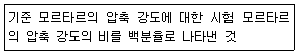
- 안정도
- 플로값 비
- 활성도 지수
- 팽창도
(정답률: 75%)
4. 설계기준 압축강도가 24MPa인 콘크리트의 배합강도를 결정하기 위해 30회의 압축강도 시험을 실시한 결과 압축강도의 표준편차가 3.0MPa였다면 배합강도는?
- 27.70MPa
- 28.02MPa
- 28.34MPa
- 28.66MPa
(정답률: 64%)
5. 시멘트의 강도시험 방법(KS L ISO 679)에 의해 모르타르를 제작할 때 시멘트 450g을 사용할 경우 필요한 표준사의 양으로 옳은 것은?
- 1⑤0g
- 1220g
- 1350g
- 1530g
(정답률: 85%)
6. 시멘트의 응결시간시험 방법으로 옳은 것은?
- 오토클레이브 방법
- 비비시험
- 블레인시험
- 길모어 침에 의한 시험
(정답률: 86%)
7. 압축강도의 시험기록이 없는 현장에서 설계기준압축강도가 20MPa인 경우 배합강도는?
- 25MPa
- 27MPa
- 28.5MPa
- 30MPa
(정답률: 77%)
8. 화학 혼화제의 품질시험 항목으로 옳지 않은 것은?
- 블리딩양의 비
- 길이 변화비
- 동결융해에 대한 저항성
- 휨강도 비
(정답률: 69%)
9. 제빙화학제가 사용되는 콘크리트의 물-결합재비는 몇%이하로 하여야 하는가?
- 40%
- 45%
- 50%
- 55%
(정답률: 79%)
10. 특수시멘트인 팽창시멘트에 관한 설명으로 옳지 않은 것은?
- 적당량의 팽창재(CaO-AI2O3-SO3)를 혼합시킨 시멘트이다.
- 팽창시멘트를 사용한 콘크리트의 응결, 블리딩 및 워커빌리티는 보통콘크리트와 비슷하다.
- 콘크리트의 균열방지를 주목적으로 하는 수축보상 콘크리트로 사용된다.
- 믹싱시간이 길어지면 팽창률이 증가하므로 비비는 시간을 길게 하여야 한다.
(정답률: 72%)
11. 콘크리트용 굵은 골재의 유해물 함유량의 한도(질량백분율) 중 점토덩어리의 경우는 최대 몇%인가?
- 0.1%
- 0.25%
- 0.5%
- 1%
(정답률: 50%)
12. 시멘트의 원료, 제조 및 조성광물에 대한 설명으로 틀린 것은?
- 시멘트의 성분 중 산화마그네슘은 수화에서 체적 증가를 동반하므로 6%이상 포함되어야 한다.
- 시멘트는 석회선, 점토, 혈암 등의 원료를 혼합하여 약 1450℃까지 가열하여 얻어진다.
- 클링커에서 가장 많은 성분은 C3S를 주성분으로 하는 알라이트이다.
- 포틀랜드시멘트의 주요 화학성분은 CaO, SiO2, AI2O3, Fe2O3이다.
(정답률: 57%)
13. AE제에 대한 일반적인 설명으로 옳은 것은?
- AE제를 사용한 콘크리트에서 물-시멘트비가 일정한 경우 공기량이 증가하면 슬럼프는 커지는 경향이 있다.
- AE제를 사용한 콘크리트에서 물-시멘트비가 일정한 경우 공기량이 증가하면 압축도는 증가하는 압축강도는 증가하는 경향이 있다.
- AE제를 대표적인 종류로는 시메졸, 리그널 등이 있으며, 시메졸과 리그널은 알칸술폰산의 염화물이다.
- AE제를 사용할 경우 기포가 시멘트 및 골재의 미립자를 떠오르게 하거나 물의 이동을 도움으로써 블리딩이 많아진다.
(정답률: 63%)
14. 부순골재의 단위용적질량이 1.60kg/L이고, 절건 밀도가 2.65kg/L일 때 이 골재의 공극률(%)은?
- 29.7%
- 34.2%
- 39.6%
- 43.5%
(정답률: 74%)
15. 콘크리트 배합설계의 기본원칙에 대한 설명으로 틀린 것은?
- 최대치수가 작은 굵은 골재를 사용할 것
- 가능한 한 단위수량을 적게 할 것
- 충분한 내구성을 확보할 것
- 경제성 있는 배합일 것
(정답률: 85%)
16. 다음 중 시멘트 시험항목에 대한 관련 장치가 적절하게 연결된 것은?
- 압축강도-르샤틀리에 플라스크
- 응결시간-블레인 공기투과장치
- 비중시험-비카트침
- 분말도-45μm표준체
(정답률: 79%)
17. 콘크리트의 배합강도를 결정하기 위해 31회의 콘크리트 압축강도 시험을 실시하여 평균값
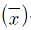
을 구하고, 각 시험값(x)으로부터 평균값을 뺀 값의 제곱 합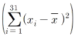
을 구하였더니 270이었다. 이 때 콘크리트의 배합강도를 결정하기 위한 압축강도의 표준편차(s)를 구하면?- 1MPa
- 2MPa
- 3MPa
- 4MPa
(정답률: 65%)
18. KS F 2508로스앤젤레스 시험기에 의한 굵은 골재의 마모 시험에서 사용시료의 등급이 A인 경우 사용 철구 수와 철구의 총 질량(g)이 옳은 것은?
- 12개, 5000±25(g)
- 11개, 5000±25(g)
- 12개, 4580±25(g)
- 11개, 4580±25(g)
(정답률: 61%)
19. 아래의 콘크리트 시방배합을 현장매합으로 수정할 때 단위 굵은 골재량으로 옳은 것은? (단, 시방배합의 단위시멘트량이 300kg/m3, 단위수량이 155kg/m3, 단위 잔골재량이 700kg/m3, 단위 굵은 골재량이 1300kg/m3,이며 현장골재의 상태는 잔골재의 표면수 4%, 굵은 골재의 표면수 1%, 잔골재 중 5mm체 잔유량 3%, 굵은 골재 중 5mm체 통과량 4%이다.)
- 1284.62kg/m3
- 1315.34kg/m3
- 1327.21kg/m3
- 1346.66kg/m3
(정답률: 46%)
20. 레디믹스트 콘크리트에 사용할 혼합수에 관한 설명으로 옳은 것은?
- 상수돗물이나 지하수는 시험을 하지 않아도 사용할 수 있다.
- 회수수를 사용하였을 경우, 단위 슬러지 고형분율이 5% 이하이어야 한다.
- 배합할 때, 회수수 중에 함유된 슬러지 고형분은 물의 질량에는 포함하지 않는 다.
- 레디믹스트 콘크리트 공장에서 운반차, 플랜트의 믹서, 호퍼 등에 부착된 콘크리트 및 현장에서 되돌아오는 레디믹스트 콘크리트를 세척하여 잔골재, 굵은 골재를 분리한 세척 배수로서 슬러지수 및 상징수의 종칭을 공업용수라고 한다.
(정답률: 29%)
2과목: 콘크리트제조, 시험 및 품질관리
21. 슬럼프 시험에 대한 설명으로 틀린 것은?
- 굵은 골재의 최대 치수가 40mm를 넘는 콘크리트의 경우에는 40mm를 넘는 굵은 골재를 제거한다.
- 시험체를 만들 콘크리트 시료는 그 배치를 대표할 수 있어야 한다.
- 슬럼프 콘에 콘크리트를 넣고 각 층을 다질 때 다짐봉의 다짐 깊이는 그 앞 층에 거의 도달할 정도로 한다.
- 슬럼프 콘을 들어 올렸을 때 콘크리트의 모양이 불균형이 된 경우 같은 시료로 재시험을 한다.
(정답률: 59%)
22. 콘크리트의 제조 \공정의 검사에 관한 설명으로 틀린 것은?
- 시방배합에 관한 검사는 공사 중 적절히 실시하는 것이 원칙이다.
- 잔골재의 조립률은 1일 1회 이상 실시한다.
- 잔골재의 표면수율은 1일 2회 이상 실시한다.
- 굵은 골재의 표면수율은 1일 2회 이상 실시한다.
(정답률: 46%)
23. 다음 중 평균값과 범위의 관리도는?
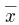
-R 관리도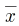
-σ 관리도- P 관리도
- Pn관리도
(정답률: 71%)
24. 콘크리트 강도 시험용 원주공시체 (ø150mm×300mm)를 할렬에 의한 간접인 장강도 시험을 실시한 결과 160KN에서 파괴되었다. 콘크리트 인장강도로 옳은 것은?
- 1.54MPa
- 2.26MPa
- 2.96MPa
- 4.57MPa
(정답률: 74%)
25. 시멘트의 저장에 대한 설명으로 틀린 것은?
- 시멘트는 방습적인 구조로 된 사일로 또는 창고에 품종별로 구분하여 저장하여야 한다.
- 시멘트를 저장하는 사일로는 시멘트가 바닥에 쌓여서 나오지 않는 부분이 생기지 않도록 한다.
- 포대시멘트가 저장 중에 지면으로부터 습기를 받지 않도록 하기 위해서는 창고의 마룻바닥과 지면 사이에 어느 정도의 거리가 필요하며, 현장에서의 목조창고를 표준으로 할 때, 그 거리를 0.3m로 하면 좋다.
- 포대시멘트를 쌓아서 저장하면 그 질량으로 인해 하부의 시멘트가 고결할 염려가 있으므로 시멘트를 쌓아 올리는 높이는 15포대 이하로 하는 것이 바람직하다.
(정답률: 80%)
26. 관입저항침에 의한 콘크리트의 응결시간 시험방법에 관한 설명으로 적합하지 않은 것은?
- 시료는 굳지 않은 콘크리트를 체로 쳐서 얻은 모르타르로 시험한다.
- 시료의 위 표면적 1000mm2당 1회의 비율로 다진다.
- 보통의 배합인 경우 20~25℃ 온도의 실험실에서 시험한다.
- 관입 저항이 3.5MPa, 28.0MPa이 될 때의 시간을 각각 초결시간과 종결시간으로 결정한다.
(정답률: 52%)
27. KS F 4009(레디믹스트 콘크리트)에서 정한 레디믹스트 콘크리트의 호칭강도에 포함되지 않는 것은?
- 27MPa
- 30MPa
- 37MPa
- 40MPa
(정답률: 80%)
28. 콘크리트 받아들이기 품질검사 항목에 속하지 않는 것은?
- 비비기 시간
- 굳지 않은 콘크리트의 상태
- 펌퍼빌리티
- 염소이온량
(정답률: 41%)
29. 콘크리트의 응결이 지연되는 경우에 대한 설명으로 틀린 것은?
- 지연형의 AE감수제 증가
- 플라이 애쉬 증가
- 시멘트의 분말도가 증가
- 슬럼프 증가
(정답률: 75%)
30. 콘크리트 탄산화에 대한 대책으로 틀린 것은?
- 콘크리트의 다지기를 충분히 하여 결함을 발생시키지 않도록 한 후 습윤양생을 한다.
- 양질의 골재를 사용하고 물-시멘트비를 크게 한다.
- 철근 피복두께를 확보한다.
- 탄산화 억제효과가 큰 투기성이 낮은 마감재를 사용한다.
(정답률: 80%)
31. 각주형 콘크리트 시험체를 4점 재하법에 따라 휨강도를 측정한 결과가 아래표와 같을 때 휨강도를 구하면? (단, 공시체가 인장쪽 표면 지간 방향 중심선의 4점 사이에서 파괴되었다.)
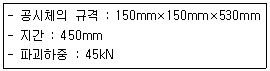
- 3.0MPa
- 4.0MPa
- 5.0MPa
- 6.0MPa
(정답률: 70%)
32. 일반콘크리트의 비비기에서 가경식 믹서를 사용하고 비비기 시간에 대한 시험을 하지 않은 경우 비비기 시간의 표준으로 옳은 것은?
- 30초 이상
- 1분 이상
- 1분 30초 이상
- 2분 이상
(정답률: 84%)
33. 레디믹스트 콘크리트의 지정 슬럼프 값이 80mm일 때 슬럼프의 허용오차로 옳은 것은?
- ±10mm
- ±15mm
- ±20mm
- ±25mm
(정답률: 75%)
34. ø150mm×300mm의 콘크리트 공시체를 사용하여 압축강도 시험을 실시한 결과 최대 하중이 490kN에서 공시체가 파괴되었다. 이 공시체의 압축강도는?
- 27.73MPa
- 28.62MPa
- 29.84MPa
- 31.42MPa
(정답률: 79%)
35. 콘크리트의 균열 중 경화 후에 발생하는 균열의 종류에 속하지 않는 것은?
- 건조수축균열
- 온도균열
- 소성수축균열
- 휨균열
(정답률: 78%)
36. 다음 중 굳지 않은 콘크리트의 워커빌리티 측정방법이 아닌 것은?
- 길이변화시험
- 구관입시험
- 비비시험
- 리몰딩시험
(정답률: 59%)
37. 콘크리트의 일반적인 성질에 대한 설명으로 틀린 것은?
- 일반적으로 단위수량이 많을수록 콘크리트의 반죽질기는 크게 된다.
- 골재 중의 세립분은 콘크리트에 점성을 주고 성형성을 좋게 한다.
- 콘크리트의 온도가 높을수록 반죽질기가 크게 된다.
- 혼합시멘트는 일반적으로 보통 포틀랜드 시멘트와 비교해서 워커빌리티를 좋게 한다.
(정답률: 64%)
38. 레디믹스트 콘크리트의 제조에서 콘크리트재료의 계량에 대한 설명으로 옳은 것은?
- 혼화제의 1회 계량 허용오차는 ±3%이다.
- 시멘트의 1회 계량 허용오차는 -2%, +1%이다.
- 골재의 1회 계량 허용오차는 ±2%이다.
- 물의 1회 계량 허용오차는 ±2%이다.
(정답률: 60%)
39. 콘크리트의 타설 시 생기는 재료분리현상을 증가시키는 요인에 대한 설명으로 틀린 것은?
- 단위수량이 지나치게 많을 때
- 단위시멘트량이 많을 때
- 굵은 골재의 최대치수가 지나치게 클 때
- 콘크리트의 슬럼프값이 클 때
(정답률: 63%)
40. 골재의 알칼리-실리카 반응을 검토하기 위하여 적합한 시험은?
- 질산은 적정법
- 전자파 레이더법
- 모르타르봉 방법
- 변색법
(정답률: 53%)
3과목: 콘크리트의 시공
41. 콘크리트 공장 제품의 특징으로 옳지 않은 것은?
- 제품이 다양하고 동일규격의 제품이 사용 가능하다.
- 현장에 있어서 양생이 필요하지 않아 공사기간이 단축된다.
- 충분한 품질관리로 신뢰성이 높은 제품의 생산이 가능하다.
- 제품의 제조는 날씨에 좌우되지 않지만 동해를 방지하기 위해 한랜지에는 시공이 불가능하다.
(정답률: 81%)
42. 댐 콘크리트 중 롤러다짐용 콘크리트의 반죽질기 표준값으로 옳은 것은? (단, VC시험을 실시할 경우)
- 10±5초
- 20±10초
- 30±15초
- 40±20초
(정답률: 69%)
43. 매스콘크리트로 다루어야 하는 구조물 부재치수의 일반적인 표준에 대한 아래 문장의 ()에 알맞은 수치는?
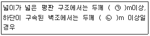
- ㉠ 0.5, ㉡ 1.0
- ㉠ 1.0, ㉡ 5.0
- ㉠ 0.8, ㉡ 0.5
- ㉠ 0.5, ㉡ 0.8
(정답률: 70%)
44. 수밀콘크리트의 물-결합재비는 몇 %이하를 표준으로 하는가?
- 35% 이하
- 40% 이하
- 45% 이하
- 50% 이하
(정답률: 62%)
45. 콘크리트의 압축강도를 시험하지 않을 경우 거푸집널의 해체시기로 옳은 것은? (단, 평균기온이 10℃이상 20℃미만이고, 보통 포틀랜드시멘트를 사용하고, 기초, 보, 기둥 및 벽의 측면인 경우)(오류 신고가 접수된 문제입니다. 반드시 정답과 해설을 확인하시기 바랍니다.)
- 3일
- 6일
- 8일
- 9일
(정답률: 41%)
46. 콘크리트 다지기에서 내부진동기 사용방법의 표준을 설명한 것으로 틀린 것은?
- 진동다지기를 할 때에는 내부진동기를 하층의 콘크리트 속으로 0.1m 절도 찔러 넣는다.
- 진동기의 삽입간격을 일반적으로 2m이하로 하는 것이 좋다.
- 1개소당 진동시간은 다짐할 때 시멘트 페이스트가 표면 상부로 약간 부상하기까지 한다.
- 내부진동기는 콘크리트로부터 천천히 빼내어 구멍이 남지 않도록 한다.
(정답률: 60%)
47. 외기온이 25℃이하일 때 허용 이어치기 시간 간격의 표준으로 옳은 것은?
- 2.5시간
- 2.0시간
- 1.5시간
- 1.0시간
(정답률: 39%)
48. 다음 시멘트 중 댐과 같이 큰 단면의 콘크리트에 적합하지 않는 것은?
- 조강 포틀랜드 시멘트
- 플라이애쉬 시멘트
- 고로 시멘트
- 실리카 시멘트
(정답률: 66%)
49. 매스콘크리트에서 온도균열지수는 구조물의 중요도, 기능, 환경조건 등에 대응 할 수 있도록 선정되어야 한다. 철근이 배치된 일반적인 구조물에서 유해한 균열발생을 제한할 경우 온도균열지수값으로 옳은 것은?
- 2.2~2.7
- 1.7~2.2
- 1.2~1.7
- 0.7~1.2
(정답률: 46%)
50. 콘크리트 구조물은 변형이 구속되면 균열이 발생한다. 그래서 미리 어느 정해진 장소에 균열을 집중시킬 목적으로 소정의 간격 단면 결손부를 설치하여 균열을 강제적으로 생기게 하는 균열유발 이음을 설치하는 것이 좋다. 이러한 균열유발 이음의 간격 및 단면의 결손율에 대한 설명으로 옳은 것은?
- 균열유발 이음의 간격은 부재높이의 1배 이상에서 2배 이내 정도로 하고 단면의 결손율은 10%를 약간 넘을 정도로 하는 것이 좋다.
- 균열유발 이음의 간격은 부재높이의 1배 이상에서 2배 이내 정도로 하고 단면의 결손율은 20%를 약간 넘을 정도로 하는 것이 좋다.
- 균열유발 이음의 간격은 부재높이의 4배 이상에서 5배 이내 정도로 하고 단면의 결손율은 10%를 약간 넘을 정도로 하는 것이 좋다.
- 균열유발 이음의 간격은 부재높이의 4배 이상에서 5배 이내 정도로 하고 단면의 결손율은 20%를 약간 넘을 정도로 하는 것이 좋다.
(정답률: 65%)
51. 해양콘크리트의 시공에서 콘크리트가 충분히 경화되기 전까지의 직접 해수에 닿지 않도록 보호하여야 하는데 이 때의 보호기간으로 옳은 것은? (단, 보통 포틀랜드 시멘트를 사용한 경우)
- 21일
- 14일
- 7일
- 5일
(정답률: 42%)
52. 고강도 콘크리트란 설계기준 압축강도가 몇 MPa이상인 콘크리트를 말하는가? (단, 보통(중량) 콘크리트인 경우)
- 27MPa
- 30MPa
- 35MPa
- 40MPa
(정답률: 66%)
53. 포장용 시멘트 콘크리트의 배합기준 중 설계기준 휨강도(f28)는 몇 MPa 이상이어야 하는가?
- 4.5MPa
- 5.5MPa
- 6.0MPa
- 6.5MPa
(정답률: 76%)
54. 고강도 콘크리트의 제조방법에 대한 설명으로 틀린 것은?
- 물-결합재비를 감소시킨다.
- 고성능 감수제를 사용한다.
- 양질의 골재를 사용한다.
- 굵은 골재 최대치수를 크게 한다.
(정답률: 66%)
55. 일반 숏크리트의 장기강도에 대한 설명으로 옳은 것은?
- 일반 숏크리트의 장기 설계기준압축강도는 재령 28일로 설정하며 그 값은 21MPa이상으로 한다.
- 일반 숏크리트의 장기 설계기준압축강도는 재령 28일로 설정하며 그 값은 14MPa이상으로 한다.
- 일반 숏크리트의 장기 설계기준압축강도는 재령 91일로 설정하며 그 값은 21MPa이상으로 한다.
- 일반 숏크리트의 장기 설계기준압축강도는 재령 91일로 설정하며 그 값은 14MPa이상으로 한다.
(정답률: 64%)
56. 고유동 콘크리트의 사용이 필요한 경우에 대한 설명으로 잘못된 것은?
- 보통 콘크리트는 충전이 곤란한 구조체인 경우
- 콘크리트의 자중을 감소시켜 지간의 증대, 보의 유효높이 감소가 요구되는 경우
- 균질하고 정밀도가 높은 구조체를 요구하는 경우
- 타설작업의 합리화로 시간 단축이 요구되는 경우
(정답률: 43%)
57. 콘크리트 공장제품의 배합특징으로 옳지 않은 것은?
- 슬럼프가 적은 된반죽 콘크리트가 사용된다.
- 제품에 따라 최소 단위 시멘트량을 규정하는 경우도 있다.
- 기계적 다짐으로 성형하므로 단위수량이 많아야 한다.
- 양생기간의 단축과 취급 중의 불량품을 적게 하기 위해 일반적으로 부배합 콘크리트가 사용된다.
(정답률: 73%)
58. 일반 콘크리트 타설에 대한 설명으로 옳지 않은 것은?
- 타설한 콘크리트를 거푸집 안에서 횡방향으로 이동시켜서는 안 된다.
- 한 구획 내의 콘크리트는 타설이 완료될 때까지 연속해서 타설해야 한다.
- 콘크리트를 2층 이상으로 나누어 타설할 경우 상층의 콘크리트 타설을 하층의 콘크리트가 굳은 후 실시하여야 한다.
- 콘크리트의 타설 도중 블리딩에 의해 표면에 떠올라 있는 물은 제거한 후 타설해야 한다.
(정답률: 77%)
59. 해양 콘크리트는 염해를 받기 쉬운 환경이므로 콘크리트 중의 강재 방식을 위한 대책을 수립할 필요가 있는데 다음 중 적당하지 않은 것은?
- 물-결합재비를 크게 한다.
- 피복두께를 크게 한다.
- 균열폭을 작게 한다.
- 플라이애쉬 시멘트를 적용한다.
(정답률: 74%)
60. 유동화 콘크리트의 슬럼프 증가량에 대한 설명으로 옳은 것은?
- 80mm 이하를 원칙으로하며, 30~50mm를 표준으로 한다.
- 80mm 이하를 원칙으로하며, 50~80mm를 표준으로 한다.
- 100mm 이하를 원칙으로하며, 50~80mm를 표준으로 한다.
- 100mm 이하를 원칙으로하며, 80~100mm를 표준으로 한다.
(정답률: 62%)
4과목: 콘크리트 구조 및 유지관리
61. 보수공법 중 수동식 주입공법의 장점으로 틀린 것은?
- 다량의 수지를 단시간에 주입할 수 있다.
- 결함폭 0.5mm 이하의 경우에 매우 효과적이다.
- 들뜸이 매우 작은 부위에도 주입이 가능하다.
- 주입압이나 속도를 조절할 수 있다.
(정답률: 62%)
62. 콘크리트의 동결융해에 대한 설명으로 틀린 것은?
- 콘크리트 중의 수분이 동결하면 팽창하여 미세한 균열이 발생한다.
- 동결융해에 대한 내구성 지수(DF)가 클수록 내구성이 좋다.
- 콘크리트 속의 기포와 기포의 간격이 가까울수록 동결융해 저항성이 크다.
- 일반적으로 콘크리트의 동결융해 저항성을 개선하기 위하여 콘크리트 내부에 도입하는 공기량은 2%정도 이하이어야 한다.
(정답률: 67%)
63. 철근콘크리트 구조물의 보강공법으로 슬래브에 적합하지 않은 공법은?
- 보의 증설공법
- 두께 증설공법
- 강판 접착공법
- 감기 공법
(정답률: 76%)
64. 강판 접착공법의 특징에 대한 설명으로 틀린 것은?
- 방청 및 방화의 특성이 뛰어나다.
- 모든 방향의 인장력에 대응할 수 있다.
- 강판의 분포, 배치를 똑같이 할 수 있으므로 균열특성이 좋다.
- 현장 타설콘크리트, 프리캐스트 부재 모두에 적용할 수 있어 응용범위가 넓다.
(정답률: 49%)
65. 이미 경화된 콘크리트의 압축강도를 추정하는 방법으로서 아래에서 설명하는 방법은?
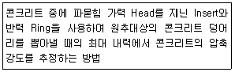
- Tc-To법
- 반발경도법
- 초음파속도법
- 인발법
(정답률: 76%)
66. 다음 중 1방향 슬래브에 대한 설명으로 틀린 것은?
- 마주보는 두 변에만 지지되는 슬래브는 1방향 슬래브로 설계하여야 한다.
- 4변에 의해 지지되는 2방향 슬래브 중에서 단변에 대한 장변의 비가 2배를 넘으면 1방향 슬래브로 해석한다.
- 1방향 슬래브의 두께는 최소 50mm이상으로 하여야 한다.
- 1방향 슬래브에서는 정모멘트 철근 및 부모멘트 철근에 직각방향으로 수축ㆍ온도철근을 배치하여야 한다.
(정답률: 60%)
67. 알칼리 골재반응이 일어나기 위해서는 일반적으로 반응의 3조건이 충족되어야 한다. 여기에 해당하지 않는 것은?
- 대기 중의 이산화탄소
- 골재 중의 유해 물질
- 시멘트 중의 알칼리
- 반응을 촉진하는 수분
(정답률: 61%)
68. 다음 중 교량의 현장재하시험 목적으로 거리가 먼 것은?
- 개통 전 현장재하시험을 통하여 완공 직후 교량의 내하력ㆍ건전도를 검증하고 구조응답의 초기값을 선정
- 차량의 주행을 통한 교량 노면의 요철도 평가
- 하중을 분포하거나 균열을 제어할 목적으로 주철근과 직각에 가까운 방향으로 배치한 보조철근
- 상하 기둥 연결부에서 단면치수가 변하는 경우에 구부린 주철근
(정답률: 53%)
69. 균열의 성장이 정지된 상태나 미세한 균ㅇ녈 시에 주로 적용되는 공법으로서, 손상된 부분을 보수재로 도포하여 처리하는 공법은?
- 단면보강공법
- 단면복구공법
- 전기방식공법
- 표면처리공법
(정답률: 80%)
70. 아래 그림과 같은 단면을 가지는 단철근 직사각형보에 요구되는 최소 철근량(As)은? (단, fck=28MPa, fy=400MPa)
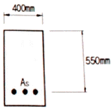
- 550mm2
- 660mm2
- 770mm2
- 880mm2
(정답률: 49%)
71. 옹벽을 설계할 때 고려하여야 할 안정조건이 아닌 것은?
- 마찰력에 대한 안정
- 전도에 대한 안정
- 활동에 대한 안정
- 지반 지지력에 대한 안정
(정답률: 59%)
72. 균형 철근량이 배근된 단철근 직사각형보에서 등가압축응력의 깊이(a)는 얼마인가? (단, 보의 폭은 300mm, 유효깊이는 500mm, As=1700mm2, fck=30MPa, fy=350MPa)
- 68mm
- 78mm
- 88mm
- 98mm
(정답률: 62%)
73. 인장철근 D29(공칭직경 28.6mm, 공칭단면적 642mm2)를 정착시키는데 소요되는 기본정착 길이(ldb)는? (단, fck=24MPa, fy=350MPa, 보통 중량콘크리트를 사용한 경우)
- 987mm
- 1138mm
- 1226mm
- 1372mm
(정답률: 54%)
74. 콘크리트의 열화현상 중 아래의 표에서 설명하는 현상은?
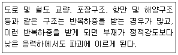
- 풍화
- 동해
- 피로
- 화학적 부식
(정답률: 82%)
75. 그림과 같은 단면을 가지는 보통 중량콘크리트보에서 fck=24MPa일 때 콘크리트에 의한 단면의 공칭전단강도(Vc)는?
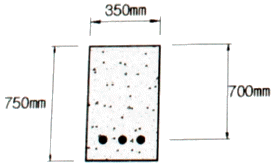
- 175kN
- 200kN
- 225kN
- 250kN
(정답률: 43%)
76. 콘크리트의 열화원인 중 환경적인 요인이 아닌 것은?
- 단면부족
- 염해
- 탄산화
- 동해
(정답률: 65%)
77. 단철근 직사각형보에서 fy=400MPa, 유효깊이는 700mm일 때 압축연단에서 중립축까지의 거리(c)는? (단, 강도설계법으로 균형단면으로 계산할 것)(오류 신고가 접수된 문제입니다. 반드시 정답과 해설을 확인하시기 바랍니다.)
- 400mm
- 420mm
- 434mm
- 472mm
(정답률: 58%)
78. 아래와 같은 보에서 계수전단력(Vu)이 øVc의 1/2을 초과하여 최소 단면적의 전단철근을 배근하려고 한다. 전단철근의 간격을 250mm로 할 때 최소 전단철근량(Au, min)은? (단, fck=21MPa, fy=400MPa이다.)
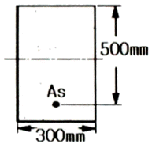
- 43.8mm2
- 55.3mm2
- 65.7mm2
- 79.2mm2
(정답률: 32%)
79. 콘크리트에 프리스트레스를 도입하면 콘크리트가 탄성체로 전환된다는 생각으로서 응력개념으로도 불리는 프리스트레스트 콘크리트의 기본개념은?
- 균등질 보의 개념
- 내력 모멘트의 개념
- 하중평형의 개념
- 하중-저항계수의 개념
(정답률: 47%)
80. 콘크리트 외관을 육안조사할 때, 추를 이용한 조사방법은 다음 중 어떤 종류의 손상에 적합한가?
- 균열
- 박리
- 이상진동
- 경사
(정답률: 72%)